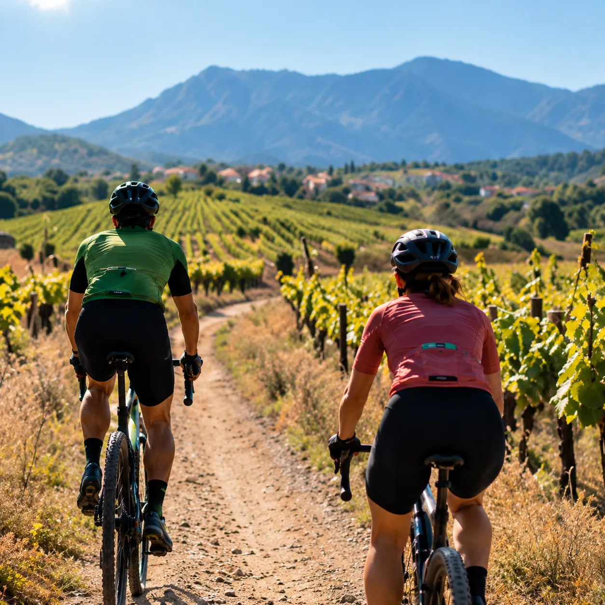
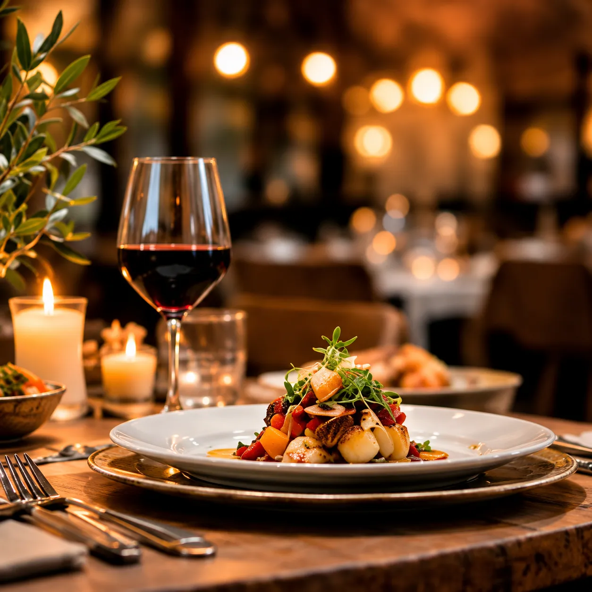

Entre Girona, Figueres i la Costa Brava
Un punt de partida privilegiat per descobrir l’Empordà.
Orriols
Tranquil i ben comunicat
Orriols és un petit poble de l’Alt Empordà, al municipi de Bàscara, a prop de la carretera que uneix Girona i Figueres. Això el fa tranquil, però a poca distància de tot.
Des de Ca la Maria pots anar a Girona, a Figueres o a les cales de la Costa Brava en una excursió d’un dia, i tornar a sopar a la casa.
Figueres
15 km
Girona
19 km
Costa Brava
25 km
Aeroport de Girona
35 km
Què fer pels voltants
Quatre maneres de viure l’Empordà des de Ca la Maria.

Cultura
Pobles amb encant
Pobles medievals de pedra, carrers estrets i places amb història, a una distància perfecta per fer-los a peu o amb bicicleta.

Natura
Natura i espais protegits
Camins entre camps, rieres i zones humides de l’Empordà, per caminar sense pressa i veure ocells i paisatge.

Esport
Rutes en bicicleta
Pistes i camins rurals entre vinyes i conreus, aptes per a gravel i cicloturisme, amb sortida directa des de casa.

Sabor
Gastronomia empordanesa
Restaurants, mercats i productors locals: vins de l’Empordà, oli, formatges i cuina de proximitat.
Com arribar
Orriols (Bàscara), Girona. Les dades exactes d’adreça s’enviaran amb la reserva.
Contacte
Tens algun dubte?
Escriu-nos i t’ajudem a preparar la teva visita a l’Empordà.